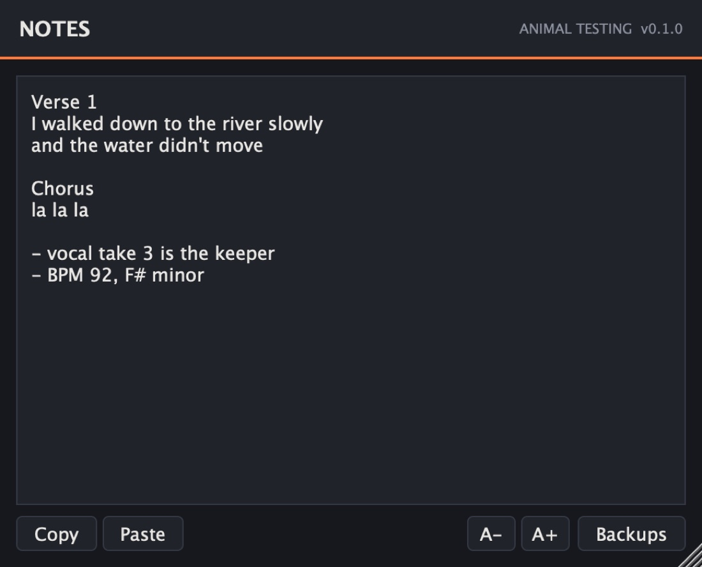

Utility · Notepad
Notes
NotsLiterally just a notepad.
Lyrics, mix notes, anything, saved with the project. It passes audio straight through, so it can go on any track.
- Version
- 0.1.0
- Audio
- Passes straight through
- Window
- Resizable
- Formats
- VST3 · AU · Standalone
How it works
The text is held by the plugin, not its window, so it's saved with the set whether or not the editor is open.
Every edit marks the set as changed, so the host asks you to save before closing.
A moment after you stop typing, Notes writes a backup copy, in case the set never gets saved. On a Mac they go to ~/Library/Application Support/Animal Testing/AT Notes/Backups.
Features
- Any trackAudio goes through untouched.
- Copy and Paste buttonsFor hosts that keep Cmd+C and Cmd+V for themselves.
- BackupsWritten a moment after typing stops.
- ResizableDrag the corner to make the page bigger.